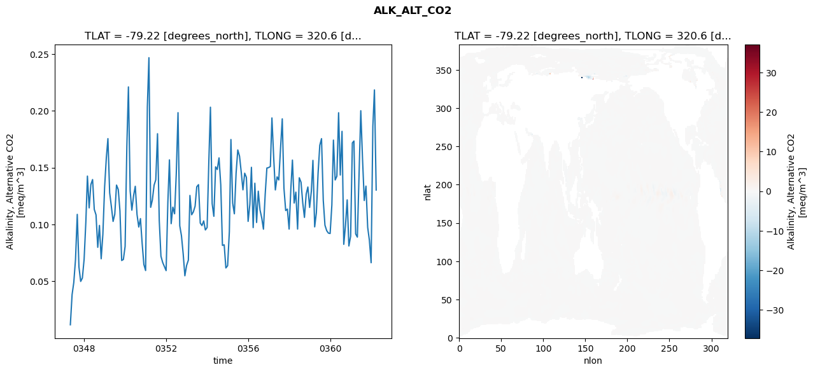
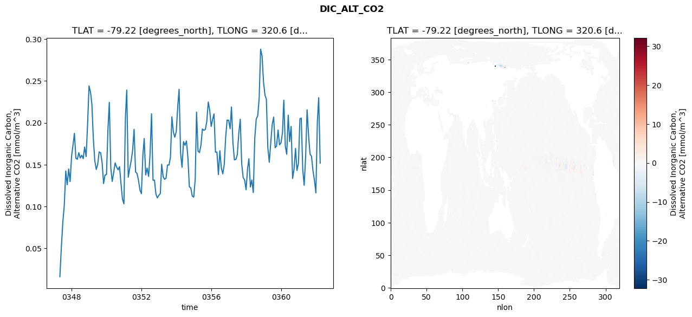
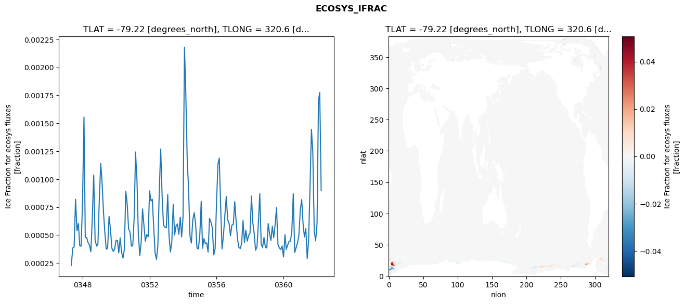
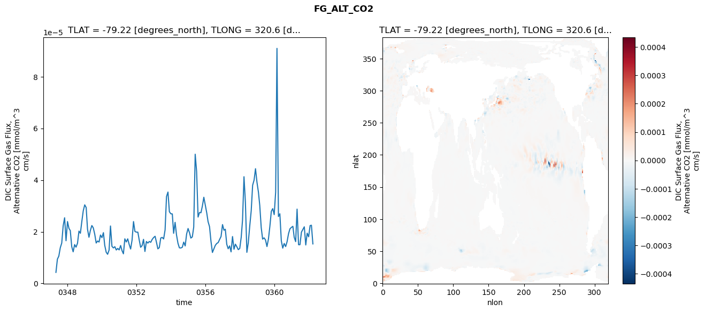

glb-dor_North_Atlantic_basin_033_1999-04-01_00133#
Simulation details#
Case: smyle.cdr-atlas-v0.glb-dor_North_Atlantic_basin_033_1999-04-01_00133.001
Basin: North_Atlantic_basin
Polygon: 33.0
Start date: 1999-04
Show code cell source Hide code cell source
import xarray as xr
import matplotlib.pyplot as plt
Show code cell source Hide code cell source
zarr_store = "/path/to/zarr/store"
# Parameters
zarr_store = "/global/cfs/projectdirs/m4746/Projects/Ocean-CDR-Atlas-v0/data/validation/smyle.cdr-atlas-v0.glb-dor_North_Atlantic_basin_033_1999-04-01_00133.001.validation.zarr"
Show code cell source Hide code cell source
%%time
ds_o = xr.open_zarr(zarr_store).compute()
ds_o
CPU times: user 669 ms, sys: 459 ms, total: 1.13 s
Wall time: 1.51 s
<xarray.Dataset> Size: 2MB
Dimensions: (nlat: 384, nlon: 320, time: 180)
Coordinates:
TLAT float64 8B -79.22
TLONG float64 8B 320.6
ULAT float64 8B -78.95
ULONG float64 8B 321.1
* time (time) object 1kB 0347-05-01 00:00:00 ... 0362-04-01 0...
z_t float32 4B 500.0
Dimensions without coordinates: nlat, nlon
Data variables:
ALK_ALT_CO2_diff (nlat, nlon) float32 492kB nan nan nan ... nan nan nan
ALK_ALT_CO2_rmse (time) float64 1kB 0.01182 0.03834 ... 0.2183 0.1303
DIC_ALT_CO2_diff (nlat, nlon) float32 492kB nan nan nan ... nan nan nan
DIC_ALT_CO2_rmse (time) float64 1kB 0.01618 0.05169 ... 0.23 0.1518
ECOSYS_IFRAC_diff (nlat, nlon) float32 492kB nan nan nan ... nan nan nan
ECOSYS_IFRAC_rmse (time) float64 1kB 0.0002283 0.0003842 ... 0.0008974
FG_ALT_CO2_diff (nlat, nlon) float32 492kB nan nan nan ... nan nan nan
FG_ALT_CO2_rmse (time) float64 1kB 4.275e-06 9.402e-06 ... 1.529e-05xarray.Dataset
- nlat: 384
- nlon: 320
- time: 180
- TLAT()float64-79.22
- long_name :
- array of t-grid latitudes
- units :
- degrees_north
array(-79.22052261)
- TLONG()float64320.6
- long_name :
- array of t-grid longitudes
- units :
- degrees_east
array(320.56250892)
- ULAT()float64-78.95
- long_name :
- array of u-grid latitudes
- units :
- degrees_north
array(-78.95289509)
- ULONG()float64321.1
- long_name :
- array of u-grid longitudes
- units :
- degrees_east
array(321.12500894)
- time(time)object0347-05-01 00:00:00 ... 0362-04-...
- bounds :
- time_bound
- long_name :
- time
array([cftime.DatetimeNoLeap(347, 5, 1, 0, 0, 0, 0, has_year_zero=True), cftime.DatetimeNoLeap(347, 6, 1, 0, 0, 0, 0, has_year_zero=True), cftime.DatetimeNoLeap(347, 7, 1, 0, 0, 0, 0, has_year_zero=True), cftime.DatetimeNoLeap(347, 8, 1, 0, 0, 0, 0, has_year_zero=True), cftime.DatetimeNoLeap(347, 9, 1, 0, 0, 0, 0, has_year_zero=True), cftime.DatetimeNoLeap(347, 10, 1, 0, 0, 0, 0, has_year_zero=True), cftime.DatetimeNoLeap(347, 11, 1, 0, 0, 0, 0, has_year_zero=True), cftime.DatetimeNoLeap(347, 12, 1, 0, 0, 0, 0, has_year_zero=True), cftime.DatetimeNoLeap(348, 1, 1, 0, 0, 0, 0, has_year_zero=True), cftime.DatetimeNoLeap(348, 2, 1, 0, 0, 0, 0, has_year_zero=True), cftime.DatetimeNoLeap(348, 3, 1, 0, 0, 0, 0, has_year_zero=True), cftime.DatetimeNoLeap(348, 4, 1, 0, 0, 0, 0, has_year_zero=True), cftime.DatetimeNoLeap(348, 5, 1, 0, 0, 0, 0, has_year_zero=True), cftime.DatetimeNoLeap(348, 6, 1, 0, 0, 0, 0, has_year_zero=True), cftime.DatetimeNoLeap(348, 7, 1, 0, 0, 0, 0, has_year_zero=True), cftime.DatetimeNoLeap(348, 8, 1, 0, 0, 0, 0, has_year_zero=True), cftime.DatetimeNoLeap(348, 9, 1, 0, 0, 0, 0, has_year_zero=True), cftime.DatetimeNoLeap(348, 10, 1, 0, 0, 0, 0, has_year_zero=True), cftime.DatetimeNoLeap(348, 11, 1, 0, 0, 0, 0, has_year_zero=True), cftime.DatetimeNoLeap(348, 12, 1, 0, 0, 0, 0, has_year_zero=True), cftime.DatetimeNoLeap(349, 1, 1, 0, 0, 0, 0, has_year_zero=True), cftime.DatetimeNoLeap(349, 2, 1, 0, 0, 0, 0, has_year_zero=True), cftime.DatetimeNoLeap(349, 3, 1, 0, 0, 0, 0, has_year_zero=True), cftime.DatetimeNoLeap(349, 4, 1, 0, 0, 0, 0, has_year_zero=True), cftime.DatetimeNoLeap(349, 5, 1, 0, 0, 0, 0, has_year_zero=True), cftime.DatetimeNoLeap(349, 6, 1, 0, 0, 0, 0, has_year_zero=True), cftime.DatetimeNoLeap(349, 7, 1, 0, 0, 0, 0, has_year_zero=True), cftime.DatetimeNoLeap(349, 8, 1, 0, 0, 0, 0, has_year_zero=True), cftime.DatetimeNoLeap(349, 9, 1, 0, 0, 0, 0, has_year_zero=True), cftime.DatetimeNoLeap(349, 10, 1, 0, 0, 0, 0, has_year_zero=True), cftime.DatetimeNoLeap(349, 11, 1, 0, 0, 0, 0, has_year_zero=True), cftime.DatetimeNoLeap(349, 12, 1, 0, 0, 0, 0, has_year_zero=True), cftime.DatetimeNoLeap(350, 1, 1, 0, 0, 0, 0, has_year_zero=True), cftime.DatetimeNoLeap(350, 2, 1, 0, 0, 0, 0, has_year_zero=True), cftime.DatetimeNoLeap(350, 3, 1, 0, 0, 0, 0, has_year_zero=True), cftime.DatetimeNoLeap(350, 4, 1, 0, 0, 0, 0, has_year_zero=True), cftime.DatetimeNoLeap(350, 5, 1, 0, 0, 0, 0, has_year_zero=True), cftime.DatetimeNoLeap(350, 6, 1, 0, 0, 0, 0, has_year_zero=True), cftime.DatetimeNoLeap(350, 7, 1, 0, 0, 0, 0, has_year_zero=True), cftime.DatetimeNoLeap(350, 8, 1, 0, 0, 0, 0, has_year_zero=True), cftime.DatetimeNoLeap(350, 9, 1, 0, 0, 0, 0, has_year_zero=True), cftime.DatetimeNoLeap(350, 10, 1, 0, 0, 0, 0, has_year_zero=True), cftime.DatetimeNoLeap(350, 11, 1, 0, 0, 0, 0, has_year_zero=True), cftime.DatetimeNoLeap(350, 12, 1, 0, 0, 0, 0, has_year_zero=True), cftime.DatetimeNoLeap(351, 1, 1, 0, 0, 0, 0, has_year_zero=True), cftime.DatetimeNoLeap(351, 2, 1, 0, 0, 0, 0, has_year_zero=True), cftime.DatetimeNoLeap(351, 3, 1, 0, 0, 0, 0, has_year_zero=True), cftime.DatetimeNoLeap(351, 4, 1, 0, 0, 0, 0, has_year_zero=True), cftime.DatetimeNoLeap(351, 5, 1, 0, 0, 0, 0, has_year_zero=True), cftime.DatetimeNoLeap(351, 6, 1, 0, 0, 0, 0, has_year_zero=True), cftime.DatetimeNoLeap(351, 7, 1, 0, 0, 0, 0, has_year_zero=True), cftime.DatetimeNoLeap(351, 8, 1, 0, 0, 0, 0, has_year_zero=True), cftime.DatetimeNoLeap(351, 9, 1, 0, 0, 0, 0, has_year_zero=True), cftime.DatetimeNoLeap(351, 10, 1, 0, 0, 0, 0, has_year_zero=True), cftime.DatetimeNoLeap(351, 11, 1, 0, 0, 0, 0, has_year_zero=True), cftime.DatetimeNoLeap(351, 12, 1, 0, 0, 0, 0, has_year_zero=True), cftime.DatetimeNoLeap(352, 1, 1, 0, 0, 0, 0, has_year_zero=True), cftime.DatetimeNoLeap(352, 2, 1, 0, 0, 0, 0, has_year_zero=True), cftime.DatetimeNoLeap(352, 3, 1, 0, 0, 0, 0, has_year_zero=True), cftime.DatetimeNoLeap(352, 4, 1, 0, 0, 0, 0, has_year_zero=True), cftime.DatetimeNoLeap(352, 5, 1, 0, 0, 0, 0, has_year_zero=True), cftime.DatetimeNoLeap(352, 6, 1, 0, 0, 0, 0, has_year_zero=True), cftime.DatetimeNoLeap(352, 7, 1, 0, 0, 0, 0, has_year_zero=True), cftime.DatetimeNoLeap(352, 8, 1, 0, 0, 0, 0, has_year_zero=True), cftime.DatetimeNoLeap(352, 9, 1, 0, 0, 0, 0, has_year_zero=True), cftime.DatetimeNoLeap(352, 10, 1, 0, 0, 0, 0, has_year_zero=True), cftime.DatetimeNoLeap(352, 11, 1, 0, 0, 0, 0, has_year_zero=True), cftime.DatetimeNoLeap(352, 12, 1, 0, 0, 0, 0, has_year_zero=True), cftime.DatetimeNoLeap(353, 1, 1, 0, 0, 0, 0, has_year_zero=True), cftime.DatetimeNoLeap(353, 2, 1, 0, 0, 0, 0, has_year_zero=True), cftime.DatetimeNoLeap(353, 3, 1, 0, 0, 0, 0, has_year_zero=True), cftime.DatetimeNoLeap(353, 4, 1, 0, 0, 0, 0, has_year_zero=True), cftime.DatetimeNoLeap(353, 5, 1, 0, 0, 0, 0, has_year_zero=True), cftime.DatetimeNoLeap(353, 6, 1, 0, 0, 0, 0, has_year_zero=True), cftime.DatetimeNoLeap(353, 7, 1, 0, 0, 0, 0, has_year_zero=True), cftime.DatetimeNoLeap(353, 8, 1, 0, 0, 0, 0, has_year_zero=True), cftime.DatetimeNoLeap(353, 9, 1, 0, 0, 0, 0, has_year_zero=True), cftime.DatetimeNoLeap(353, 10, 1, 0, 0, 0, 0, has_year_zero=True), cftime.DatetimeNoLeap(353, 11, 1, 0, 0, 0, 0, has_year_zero=True), cftime.DatetimeNoLeap(353, 12, 1, 0, 0, 0, 0, has_year_zero=True), cftime.DatetimeNoLeap(354, 1, 1, 0, 0, 0, 0, has_year_zero=True), cftime.DatetimeNoLeap(354, 2, 1, 0, 0, 0, 0, has_year_zero=True), cftime.DatetimeNoLeap(354, 3, 1, 0, 0, 0, 0, has_year_zero=True), cftime.DatetimeNoLeap(354, 4, 1, 0, 0, 0, 0, has_year_zero=True), cftime.DatetimeNoLeap(354, 5, 1, 0, 0, 0, 0, has_year_zero=True), cftime.DatetimeNoLeap(354, 6, 1, 0, 0, 0, 0, has_year_zero=True), cftime.DatetimeNoLeap(354, 7, 1, 0, 0, 0, 0, has_year_zero=True), cftime.DatetimeNoLeap(354, 8, 1, 0, 0, 0, 0, has_year_zero=True), cftime.DatetimeNoLeap(354, 9, 1, 0, 0, 0, 0, has_year_zero=True), cftime.DatetimeNoLeap(354, 10, 1, 0, 0, 0, 0, has_year_zero=True), cftime.DatetimeNoLeap(354, 11, 1, 0, 0, 0, 0, has_year_zero=True), cftime.DatetimeNoLeap(354, 12, 1, 0, 0, 0, 0, has_year_zero=True), cftime.DatetimeNoLeap(355, 1, 1, 0, 0, 0, 0, has_year_zero=True), cftime.DatetimeNoLeap(355, 2, 1, 0, 0, 0, 0, has_year_zero=True), cftime.DatetimeNoLeap(355, 3, 1, 0, 0, 0, 0, has_year_zero=True), cftime.DatetimeNoLeap(355, 4, 1, 0, 0, 0, 0, has_year_zero=True), cftime.DatetimeNoLeap(355, 5, 1, 0, 0, 0, 0, has_year_zero=True), cftime.DatetimeNoLeap(355, 6, 1, 0, 0, 0, 0, has_year_zero=True), cftime.DatetimeNoLeap(355, 7, 1, 0, 0, 0, 0, has_year_zero=True), cftime.DatetimeNoLeap(355, 8, 1, 0, 0, 0, 0, has_year_zero=True), cftime.DatetimeNoLeap(355, 9, 1, 0, 0, 0, 0, has_year_zero=True), cftime.DatetimeNoLeap(355, 10, 1, 0, 0, 0, 0, has_year_zero=True), cftime.DatetimeNoLeap(355, 11, 1, 0, 0, 0, 0, has_year_zero=True), cftime.DatetimeNoLeap(355, 12, 1, 0, 0, 0, 0, has_year_zero=True), cftime.DatetimeNoLeap(356, 1, 1, 0, 0, 0, 0, has_year_zero=True), cftime.DatetimeNoLeap(356, 2, 1, 0, 0, 0, 0, has_year_zero=True), cftime.DatetimeNoLeap(356, 3, 1, 0, 0, 0, 0, has_year_zero=True), cftime.DatetimeNoLeap(356, 4, 1, 0, 0, 0, 0, has_year_zero=True), cftime.DatetimeNoLeap(356, 5, 1, 0, 0, 0, 0, has_year_zero=True), cftime.DatetimeNoLeap(356, 6, 1, 0, 0, 0, 0, has_year_zero=True), cftime.DatetimeNoLeap(356, 7, 1, 0, 0, 0, 0, has_year_zero=True), cftime.DatetimeNoLeap(356, 8, 1, 0, 0, 0, 0, has_year_zero=True), cftime.DatetimeNoLeap(356, 9, 1, 0, 0, 0, 0, has_year_zero=True), cftime.DatetimeNoLeap(356, 10, 1, 0, 0, 0, 0, has_year_zero=True), cftime.DatetimeNoLeap(356, 11, 1, 0, 0, 0, 0, has_year_zero=True), cftime.DatetimeNoLeap(356, 12, 1, 0, 0, 0, 0, has_year_zero=True), cftime.DatetimeNoLeap(357, 1, 1, 0, 0, 0, 0, has_year_zero=True), cftime.DatetimeNoLeap(357, 2, 1, 0, 0, 0, 0, has_year_zero=True), cftime.DatetimeNoLeap(357, 3, 1, 0, 0, 0, 0, has_year_zero=True), cftime.DatetimeNoLeap(357, 4, 1, 0, 0, 0, 0, has_year_zero=True), cftime.DatetimeNoLeap(357, 5, 1, 0, 0, 0, 0, has_year_zero=True), cftime.DatetimeNoLeap(357, 6, 1, 0, 0, 0, 0, has_year_zero=True), cftime.DatetimeNoLeap(357, 7, 1, 0, 0, 0, 0, has_year_zero=True), cftime.DatetimeNoLeap(357, 8, 1, 0, 0, 0, 0, has_year_zero=True), cftime.DatetimeNoLeap(357, 9, 1, 0, 0, 0, 0, has_year_zero=True), cftime.DatetimeNoLeap(357, 10, 1, 0, 0, 0, 0, has_year_zero=True), cftime.DatetimeNoLeap(357, 11, 1, 0, 0, 0, 0, has_year_zero=True), cftime.DatetimeNoLeap(357, 12, 1, 0, 0, 0, 0, has_year_zero=True), cftime.DatetimeNoLeap(358, 1, 1, 0, 0, 0, 0, has_year_zero=True), cftime.DatetimeNoLeap(358, 2, 1, 0, 0, 0, 0, has_year_zero=True), cftime.DatetimeNoLeap(358, 3, 1, 0, 0, 0, 0, has_year_zero=True), cftime.DatetimeNoLeap(358, 4, 1, 0, 0, 0, 0, has_year_zero=True), cftime.DatetimeNoLeap(358, 5, 1, 0, 0, 0, 0, has_year_zero=True), cftime.DatetimeNoLeap(358, 6, 1, 0, 0, 0, 0, has_year_zero=True), cftime.DatetimeNoLeap(358, 7, 1, 0, 0, 0, 0, has_year_zero=True), cftime.DatetimeNoLeap(358, 8, 1, 0, 0, 0, 0, has_year_zero=True), cftime.DatetimeNoLeap(358, 9, 1, 0, 0, 0, 0, has_year_zero=True), cftime.DatetimeNoLeap(358, 10, 1, 0, 0, 0, 0, has_year_zero=True), cftime.DatetimeNoLeap(358, 11, 1, 0, 0, 0, 0, has_year_zero=True), cftime.DatetimeNoLeap(358, 12, 1, 0, 0, 0, 0, has_year_zero=True), cftime.DatetimeNoLeap(359, 1, 1, 0, 0, 0, 0, has_year_zero=True), cftime.DatetimeNoLeap(359, 2, 1, 0, 0, 0, 0, has_year_zero=True), cftime.DatetimeNoLeap(359, 3, 1, 0, 0, 0, 0, has_year_zero=True), cftime.DatetimeNoLeap(359, 4, 1, 0, 0, 0, 0, has_year_zero=True), cftime.DatetimeNoLeap(359, 5, 1, 0, 0, 0, 0, has_year_zero=True), cftime.DatetimeNoLeap(359, 6, 1, 0, 0, 0, 0, has_year_zero=True), cftime.DatetimeNoLeap(359, 7, 1, 0, 0, 0, 0, has_year_zero=True), cftime.DatetimeNoLeap(359, 8, 1, 0, 0, 0, 0, has_year_zero=True), cftime.DatetimeNoLeap(359, 9, 1, 0, 0, 0, 0, has_year_zero=True), cftime.DatetimeNoLeap(359, 10, 1, 0, 0, 0, 0, has_year_zero=True), cftime.DatetimeNoLeap(359, 11, 1, 0, 0, 0, 0, has_year_zero=True), cftime.DatetimeNoLeap(359, 12, 1, 0, 0, 0, 0, has_year_zero=True), cftime.DatetimeNoLeap(360, 1, 1, 0, 0, 0, 0, has_year_zero=True), cftime.DatetimeNoLeap(360, 2, 1, 0, 0, 0, 0, has_year_zero=True), cftime.DatetimeNoLeap(360, 3, 1, 0, 0, 0, 0, has_year_zero=True), cftime.DatetimeNoLeap(360, 4, 1, 0, 0, 0, 0, has_year_zero=True), cftime.DatetimeNoLeap(360, 5, 1, 0, 0, 0, 0, has_year_zero=True), cftime.DatetimeNoLeap(360, 6, 1, 0, 0, 0, 0, has_year_zero=True), cftime.DatetimeNoLeap(360, 7, 1, 0, 0, 0, 0, has_year_zero=True), cftime.DatetimeNoLeap(360, 8, 1, 0, 0, 0, 0, has_year_zero=True), cftime.DatetimeNoLeap(360, 9, 1, 0, 0, 0, 0, has_year_zero=True), cftime.DatetimeNoLeap(360, 10, 1, 0, 0, 0, 0, has_year_zero=True), cftime.DatetimeNoLeap(360, 11, 1, 0, 0, 0, 0, has_year_zero=True), cftime.DatetimeNoLeap(360, 12, 1, 0, 0, 0, 0, has_year_zero=True), cftime.DatetimeNoLeap(361, 1, 1, 0, 0, 0, 0, has_year_zero=True), cftime.DatetimeNoLeap(361, 2, 1, 0, 0, 0, 0, has_year_zero=True), cftime.DatetimeNoLeap(361, 3, 1, 0, 0, 0, 0, has_year_zero=True), cftime.DatetimeNoLeap(361, 4, 1, 0, 0, 0, 0, has_year_zero=True), cftime.DatetimeNoLeap(361, 5, 1, 0, 0, 0, 0, has_year_zero=True), cftime.DatetimeNoLeap(361, 6, 1, 0, 0, 0, 0, has_year_zero=True), cftime.DatetimeNoLeap(361, 7, 1, 0, 0, 0, 0, has_year_zero=True), cftime.DatetimeNoLeap(361, 8, 1, 0, 0, 0, 0, has_year_zero=True), cftime.DatetimeNoLeap(361, 9, 1, 0, 0, 0, 0, has_year_zero=True), cftime.DatetimeNoLeap(361, 10, 1, 0, 0, 0, 0, has_year_zero=True), cftime.DatetimeNoLeap(361, 11, 1, 0, 0, 0, 0, has_year_zero=True), cftime.DatetimeNoLeap(361, 12, 1, 0, 0, 0, 0, has_year_zero=True), cftime.DatetimeNoLeap(362, 1, 1, 0, 0, 0, 0, has_year_zero=True), cftime.DatetimeNoLeap(362, 2, 1, 0, 0, 0, 0, has_year_zero=True), cftime.DatetimeNoLeap(362, 3, 1, 0, 0, 0, 0, has_year_zero=True), cftime.DatetimeNoLeap(362, 4, 1, 0, 0, 0, 0, has_year_zero=True)], dtype=object) - z_t()float32500.0
- long_name :
- depth from surface to midpoint of layer
- positive :
- down
- units :
- centimeters
- valid_max :
- 537500.0
- valid_min :
- 500.0
array(500., dtype=float32)
- ALK_ALT_CO2_diff(nlat, nlon)float32nan nan nan nan ... nan nan nan nan
- cell_methods :
- time: mean
- grid_loc :
- 3111
- long_name :
- Alkalinity, Alternative CO2
- units :
- meq/m^3
array([[ nan, nan, nan, ..., nan, nan, nan], [ nan, nan, nan, ..., nan, nan, nan], [0.00341797, 0.02270508, 0.05444336, ..., nan, nan, nan], ..., [ nan, nan, nan, ..., nan, nan, nan], [ nan, nan, nan, ..., nan, nan, nan], [ nan, nan, nan, ..., nan, nan, nan]], dtype=float32) - ALK_ALT_CO2_rmse(time)float640.01182 0.03834 ... 0.2183 0.1303
- cell_methods :
- time: mean
- grid_loc :
- 3111
- long_name :
- Alkalinity, Alternative CO2
- units :
- meq/m^3
array([0.01181653, 0.03833812, 0.04888592, 0.06926113, 0.10888551, 0.06266663, 0.04992412, 0.05295166, 0.06929161, 0.1022269 , 0.14253176, 0.11458809, 0.13507685, 0.13950574, 0.11325179, 0.10845577, 0.07992323, 0.09917414, 0.06986306, 0.09127638, 0.13279786, 0.15895753, 0.17547455, 0.12780531, 0.11598134, 0.10267694, 0.10894147, 0.13463607, 0.13075406, 0.11197394, 0.06832841, 0.06921828, 0.08073855, 0.16890746, 0.22094965, 0.12951727, 0.1125699 , 0.12536316, 0.1335759 , 0.10876145, 0.09778209, 0.10516859, 0.08296666, 0.06480077, 0.05951817, 0.20344591, 0.24665123, 0.11509267, 0.12149996, 0.13457804, 0.13927041, 0.17979385, 0.10334339, 0.07209459, 0.06658466, 0.06308097, 0.05941671, 0.11943438, 0.15681057, 0.10072119, 0.11521628, 0.10941372, 0.14481232, 0.19830817, 0.09888355, 0.09012954, 0.07416271, 0.05491957, 0.0640352 , 0.06866678, 0.12552434, 0.1085474 , 0.11101791, 0.11608748, 0.13316366, 0.13501283, 0.10123134, 0.09904269, 0.10314022, 0.09518904, 0.09733017, 0.15613315, 0.20310898, 0.11829442, 0.10718757, 0.15069438, 0.14834647, 0.15855353, 0.13482598, 0.08159852, 0.08210138, 0.06177316, 0.06374911, 0.0936817 , 0.17470314, 0.11868581, 0.10939717, 0.14521126, 0.16553023, 0.16010824, 0.14582356, 0.13046144, 0.14508447, 0.14152237, 0.1027355 , 0.11775749, 0.15026058, 0.09727195, 0.13625724, 0.10174814, 0.12927062, 0.1127504 , 0.10563409, 0.09587394, 0.12649019, 0.14960999, 0.15002744, 0.15097268, 0.19368404, 0.15920148, 0.13038378, 0.14187971, 0.13912828, 0.16680394, 0.19286806, 0.13196851, 0.11225599, 0.11352657, 0.09595085, 0.13164723, 0.15662692, 0.11885037, 0.12842493, 0.09595676, 0.14108151, 0.13715108, 0.11889211, 0.10622476, 0.12675613, 0.13293333, 0.1149778 , 0.12938183, 0.15636655, 0.09790294, 0.11026627, 0.14539327, 0.16963215, 0.17545805, 0.12126616, 0.09937082, 0.09458249, 0.09243559, 0.09204454, 0.11716998, 0.17418223, 0.13914374, 0.14244032, 0.1982528 , 0.14345149, 0.18190059, 0.08254685, 0.09875667, 0.12163909, 0.08110021, 0.08961814, 0.17166629, 0.17339487, 0.09167193, 0.08888304, 0.14565703, 0.20002175, 0.15762472, 0.12106892, 0.1337357 , 0.09743697, 0.08618577, 0.06636001, 0.18630356, 0.21831484, 0.13028684]) - DIC_ALT_CO2_diff(nlat, nlon)float32nan nan nan nan ... nan nan nan nan
- cell_methods :
- time: mean
- grid_loc :
- 3111
- long_name :
- Dissolved Inorganic Carbon, Alternative CO2
- units :
- mmol/m^3
array([[ nan, nan, nan, ..., nan, nan, nan], [ nan, nan, nan, ..., nan, nan, nan], [-0.08837891, -0.03979492, 0.01611328, ..., nan, nan, nan], ..., [ nan, nan, nan, ..., nan, nan, nan], [ nan, nan, nan, ..., nan, nan, nan], [ nan, nan, nan, ..., nan, nan, nan]], dtype=float32) - DIC_ALT_CO2_rmse(time)float640.01618 0.05169 ... 0.23 0.1518
- cell_methods :
- time: mean
- grid_loc :
- 3111
- long_name :
- Dissolved Inorganic Carbon, Alternative CO2
- units :
- mmol/m^3
array([0.01618111, 0.05169451, 0.08057228, 0.10170542, 0.14250259, 0.12600544, 0.14481183, 0.12971711, 0.16018447, 0.17404889, 0.18733077, 0.15757387, 0.15636331, 0.1642655 , 0.15790324, 0.16118061, 0.15709515, 0.17101482, 0.15958454, 0.19763207, 0.24401927, 0.23646623, 0.22248956, 0.18090792, 0.15487623, 0.14425303, 0.15033495, 0.16522557, 0.16410216, 0.15286947, 0.12745988, 0.13749958, 0.13817646, 0.19264799, 0.22439074, 0.14622801, 0.12990914, 0.14069485, 0.15212502, 0.1471567 , 0.14381745, 0.147569 , 0.12685116, 0.10892048, 0.10320944, 0.20654349, 0.23897022, 0.13502538, 0.14533224, 0.15456485, 0.16669109, 0.19214307, 0.14134047, 0.13957708, 0.13149277, 0.11980532, 0.1153631 , 0.16107955, 0.1811864 , 0.13769546, 0.14583302, 0.13592318, 0.16216846, 0.21065137, 0.13131454, 0.13159907, 0.11486329, 0.11029702, 0.11336457, 0.11547918, 0.15050572, 0.13585433, 0.13246097, 0.13383346, 0.1495731 , 0.14949714, 0.15870398, 0.20700392, 0.18903568, 0.18276915, 0.18958692, 0.22024031, 0.23985327, 0.16379112, 0.14681492, 0.17748258, 0.17310464, 0.17822265, 0.15852322, 0.12374149, 0.12196447, 0.11253186, 0.11119445, 0.13281817, 0.21270641, 0.16606623, 0.16440267, 0.17315726, 0.19254744, 0.19097006, 0.19193268, 0.20153422, 0.22474215, 0.21485339, 0.19557549, 0.20435127, 0.21048673, 0.16481868, 0.16503467, 0.13812 , 0.16661543, 0.14599938, 0.13899815, 0.15026308, 0.18375079, 0.20325552, 0.20280656, 0.19284305, 0.21877772, 0.17634736, 0.15567688, 0.15617795, 0.1617281 , 0.18720209, 0.20420861, 0.15126506, 0.13458879, 0.13169485, 0.12001102, 0.14538212, 0.15701354, 0.12333793, 0.13162703, 0.1166292 , 0.18091795, 0.20432948, 0.20822401, 0.22846246, 0.2878174 , 0.27970514, 0.24833306, 0.23271107, 0.22814395, 0.17022309, 0.15281285, 0.17631498, 0.19786588, 0.20677825, 0.17014321, 0.17232454, 0.19130986, 0.17362 , 0.17596523, 0.18805397, 0.22700013, 0.17213852, 0.16243173, 0.20910715, 0.17755854, 0.19566452, 0.13349966, 0.14443744, 0.16947159, 0.14300126, 0.1515315 , 0.20460454, 0.20562205, 0.14423295, 0.12533223, 0.16035423, 0.21538753, 0.18493191, 0.16241275, 0.1600013 , 0.14285591, 0.13163813, 0.1162602 , 0.20165225, 0.22995481, 0.15181457]) - ECOSYS_IFRAC_diff(nlat, nlon)float32nan nan nan nan ... nan nan nan nan
- cell_methods :
- time: mean
- grid_loc :
- 2110
- long_name :
- Ice Fraction for ecosys fluxes
- units :
- fraction
array([[ nan, nan, nan, ..., nan, nan, nan], [ nan, nan, nan, ..., nan, nan, nan], [ 0.00038421, -0.00403929, -0.00303942, ..., nan, nan, nan], ..., [ nan, nan, nan, ..., nan, nan, nan], [ nan, nan, nan, ..., nan, nan, nan], [ nan, nan, nan, ..., nan, nan, nan]], dtype=float32) - ECOSYS_IFRAC_rmse(time)float640.0002283 0.0003842 ... 0.0008974
- cell_methods :
- time: mean
- grid_loc :
- 2110
- long_name :
- Ice Fraction for ecosys fluxes
- units :
- fraction
array([0.00022835, 0.00038418, 0.00039338, 0.00082031, 0.00053742, 0.00060421, 0.00040312, 0.00040084, 0.00080624, 0.00155606, 0.00048019, 0.0004779 , 0.00043202, 0.00040861, 0.00035032, 0.00064809, 0.00103708, 0.00045928, 0.0004012 , 0.00041631, 0.00081728, 0.00113963, 0.00097726, 0.00071356, 0.00052682, 0.00037366, 0.00038306, 0.00066569, 0.00055289, 0.00038397, 0.00035364, 0.00037356, 0.00045339, 0.00045048, 0.00033954, 0.00047453, 0.00034567, 0.00029371, 0.00037303, 0.00089293, 0.0007753 , 0.00055542, 0.00052799, 0.00039987, 0.00040922, 0.00066998, 0.00124319, 0.00099961, 0.0005165 , 0.00031687, 0.00042579, 0.0007327 , 0.00058517, 0.00044438, 0.000504 , 0.00048387, 0.00089519, 0.00080519, 0.00082041, 0.00057966, 0.00034212, 0.00028284, 0.00040624, 0.00089407, 0.00126953, 0.00085761, 0.00058755, 0.00057073, 0.00056462, 0.00086246, 0.00049401, 0.00034882, 0.00044013, 0.00077608, 0.00050152, 0.00057902, 0.00059971, 0.00050657, 0.00065986, 0.00048411, 0.00066284, 0.00218131, 0.00178478, 0.00118432, 0.00091359, 0.00048977, 0.00042816, 0.00063586, 0.00070014, 0.00060193, 0.00038207, 0.00037576, 0.00049888, 0.00080087, 0.00038165, 0.00046976, 0.00042278, 0.00043004, 0.00034712, 0.00064798, 0.00061608, 0.00056422, 0.00032293, 0.00037812, 0.00079615, 0.00113942, 0.0011878 , 0.00074451, 0.00037596, 0.00049771, 0.00067485, 0.00084545, 0.00063677, 0.00060394, 0.00049455, 0.00058957, 0.00059366, 0.00079862, 0.00063848, 0.00047325, 0.00039025, 0.00037953, 0.00041993, 0.00063051, 0.00043296, 0.00054397, 0.00044496, 0.00049569, 0.00051845, 0.00084884, 0.00061579, 0.00051295, 0.00036379, 0.00039352, 0.00060599, 0.000871 , 0.00041568, 0.00039029, 0.0004786 , 0.00039146, 0.00038386, 0.00060309, 0.0005137 , 0.00045105, 0.00057841, 0.0004766 , 0.00058913, 0.00074575, 0.00041639, 0.00038561, 0.00036985, 0.00040177, 0.000304 , 0.00050285, 0.00037169, 0.0004104 , 0.00044161, 0.00044632, 0.00053955, 0.00086978, 0.00034321, 0.00038494, 0.00042867, 0.00049464, 0.00072354, 0.00081711, 0.00060881, 0.00048333, 0.00055849, 0.00028946, 0.00044973, 0.00093123, 0.00144613, 0.00123945, 0.00053909, 0.00044779, 0.00060122, 0.00170674, 0.00177541, 0.00089739]) - FG_ALT_CO2_diff(nlat, nlon)float32nan nan nan nan ... nan nan nan nan
- cell_methods :
- time: mean
- grid_loc :
- 2110
- long_name :
- DIC Surface Gas Flux, Alternative CO2
- units :
- mmol/m^3 cm/s
array([[ nan, nan, nan, ..., nan, nan, nan], [ nan, nan, nan, ..., nan, nan, nan], [4.4553599e-06, 1.9252620e-05, 1.3899931e-05, ..., nan, nan, nan], ..., [ nan, nan, nan, ..., nan, nan, nan], [ nan, nan, nan, ..., nan, nan, nan], [ nan, nan, nan, ..., nan, nan, nan]], dtype=float32) - FG_ALT_CO2_rmse(time)float644.275e-06 9.402e-06 ... 1.529e-05
- cell_methods :
- time: mean
- grid_loc :
- 2110
- long_name :
- DIC Surface Gas Flux, Alternative CO2
- units :
- mmol/m^3 cm/s
array([4.27481903e-06, 9.40224665e-06, 1.05540384e-05, 1.37960442e-05, 1.56262484e-05, 2.22670955e-05, 2.54112908e-05, 1.65276256e-05, 2.39504923e-05, 2.12807415e-05, 2.04545461e-05, 1.42075443e-05, 1.22372561e-05, 1.50373375e-05, 1.40336100e-05, 1.55387596e-05, 2.02462536e-05, 1.94067596e-05, 2.40176260e-05, 2.81055109e-05, 3.04057078e-05, 2.93642228e-05, 2.09953201e-05, 1.78704981e-05, 2.05165649e-05, 2.24069486e-05, 2.15304620e-05, 1.90739849e-05, 1.56381020e-05, 1.64215888e-05, 1.60249889e-05, 1.87403431e-05, 1.77039958e-05, 1.96549478e-05, 1.47645056e-05, 1.20802947e-05, 1.12784747e-05, 1.28997722e-05, 2.22302300e-05, 1.43519792e-05, 1.37347575e-05, 1.42202766e-05, 1.29420608e-05, 1.35426799e-05, 1.29816108e-05, 1.46829029e-05, 1.27563945e-05, 1.14639915e-05, 1.72580536e-05, 1.60463321e-05, 1.72514426e-05, 1.50843581e-05, 1.33182284e-05, 1.67557204e-05, 2.39394743e-05, 2.01054155e-05, 1.98447413e-05, 1.98346431e-05, 1.68948147e-05, 1.39908357e-05, 1.46016896e-05, 1.70620132e-05, 1.23650612e-05, 1.62245529e-05, 1.56152504e-05, 1.62469843e-05, 1.59118477e-05, 1.70121682e-05, 1.77553751e-05, 1.82494228e-05, 1.60308896e-05, 1.33929185e-05, 1.38510229e-05, 1.75640463e-05, 1.78123324e-05, 1.72136956e-05, 2.07104816e-05, 3.35936670e-05, 3.53593584e-05, 2.77498713e-05, ... 2.74618725e-05, 2.73565985e-05, 3.00224550e-05, 3.33491451e-05, 3.03352502e-05, 2.72709493e-05, 2.38976687e-05, 2.19511547e-05, 1.63641346e-05, 1.19797817e-05, 1.33226062e-05, 1.47292576e-05, 1.54705896e-05, 1.58129427e-05, 1.70438290e-05, 1.81666324e-05, 2.27745165e-05, 2.05905856e-05, 2.09679767e-05, 1.51430688e-05, 1.34164638e-05, 1.45230704e-05, 1.22202342e-05, 1.81464334e-05, 1.32248309e-05, 1.51873940e-05, 1.41810243e-05, 1.30768418e-05, 1.35302582e-05, 1.78423400e-05, 2.44802092e-05, 4.12942166e-05, 3.13629025e-05, 1.20359305e-05, 1.57403377e-05, 2.22130693e-05, 2.80959599e-05, 3.79798719e-05, 4.00044799e-05, 4.43937516e-05, 3.91553690e-05, 3.53202974e-05, 3.02492304e-05, 2.16206112e-05, 1.71462705e-05, 1.76403669e-05, 1.68224936e-05, 1.42717411e-05, 1.71680643e-05, 2.20130186e-05, 2.79048414e-05, 2.89445080e-05, 2.66282750e-05, 3.53563186e-05, 9.09504191e-05, 2.58949159e-05, 2.69562059e-05, 1.64869920e-05, 1.36569084e-05, 1.54675352e-05, 1.42605301e-05, 1.61436391e-05, 1.92585112e-05, 2.11335729e-05, 2.16891754e-05, 2.20972052e-05, 1.78542290e-05, 1.61783084e-05, 2.87516591e-05, 1.49854216e-05, 1.49840478e-05, 1.98359444e-05, 2.08944112e-05, 2.19158310e-05, 1.48846331e-05, 1.94540170e-05, 1.80536918e-05, 2.23775869e-05, 2.25173349e-05, 1.52922970e-05])
- timePandasIndex
PandasIndex(CFTimeIndex([0347-05-01 00:00:00, 0347-06-01 00:00:00, 0347-07-01 00:00:00, 0347-08-01 00:00:00, 0347-09-01 00:00:00, 0347-10-01 00:00:00, 0347-11-01 00:00:00, 0347-12-01 00:00:00, 0348-01-01 00:00:00, 0348-02-01 00:00:00, ... 0361-07-01 00:00:00, 0361-08-01 00:00:00, 0361-09-01 00:00:00, 0361-10-01 00:00:00, 0361-11-01 00:00:00, 0361-12-01 00:00:00, 0362-01-01 00:00:00, 0362-02-01 00:00:00, 0362-03-01 00:00:00, 0362-04-01 00:00:00], dtype='object', length=180, calendar='noleap', freq='MS'))
Show code cell source Hide code cell source
variables = [v[:-5] for v in ds_o.variables if "_rmse" in v]
Show code cell source Hide code cell source
plt.rcParams.update({'figure.max_open_warning': 0})
for v in variables:
fig, axs = plt.subplots(1, 2, figsize=(15, 6))
ds_o[f"{v}_rmse"].plot(ax=axs[0])
ds_o[f"{v}_diff"].plot(ax=axs[1])
plt.suptitle(v, fontweight="bold")



